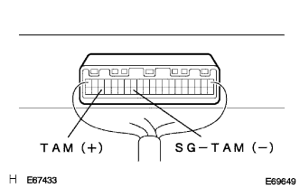
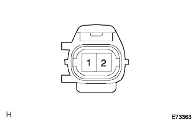
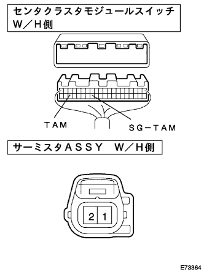

DTC B/L Outside air sensor circuit |
| Display code | Diagnostic content
| Inspection site |
|---|---|---|
| B/L |
|
|
| Step 1 | Center cluster module switch single inspection (TAM) |
Turn on the IG switch.
|  |
Use SST (Toyota Electrical Tester) to measure the voltage between the connector A38 (TAM) terminal ← → A33 (SG-TAM) terminals of the center cruster module switch.
|
| ||||
|
| ||||
| NG | |
| Step 2 | Thermista ASSY single inspection |
Outside air sensor resistance inspection
Separate the connector of the thermista asser (outside air sensor).
|  |
Use SST (Toyota Electrical Tester) to measure the resistance value between the terminals of the thermista asser (outside air sensor).
 |
The sensor atmosphere temperature and resistance value at the time of inspection are measured and determined.
| Temperature (° C) | Standard value (kΩ) |
|---|---|
| 10 | 3.00-3.73 |
| 15 | 2.45-2.88 |
| 20 | 1.95-2.30 |
| twenty five | 1.60-1.80 |
| 30 | 1.28-1.47 |
| 35 | 1.00-1.22 |
| 40 | 0.80-1.00 |
| 45 | 0.65-0.85 |
| 50 | 0.50-0.70 |
| 55 | 0.44-0.60 |
| 60 | 0.36-0.50 |
|
| ||||
| OK | |
| Step 3 | Wire harness or connector inspection (Senta Cluster Module Switch-Thermista ASSY) |
Cut the connector of the center cruster module switch.
|  |
Use SST (Toyota Electrical Tester) to inspect the conduction and GND short (short circuit) between each connector terminal of the vehicle wire harness.
| Senta Cluster Module Switch side Terminal number (terminal symbol) | Thermista ASSY side Terminal number |
|---|---|
| A38 (TAM) | 1 |
| A33 (SG-TAM) | 2 |
|
| ||||
| OK | ||
| ||